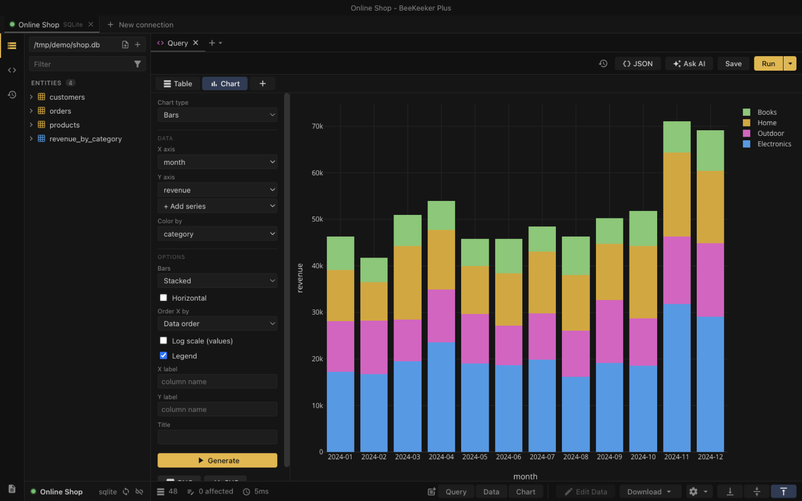

A desktop SQL editor for nine database engines, with a CodeMirror query editor, a charting panel, inline data editing, report export and an AI assistant.
BeeKeeper Plus is a desktop SQL editor and database browser built with Electron, Vue 3 and CodeMirror 6, modelled on the look and feel of Beekeeper Studio. It is a personal project: a single dark-themed window with a connection manager, an entity tree, tabbed query editors and a results grid, able to talk to SQLite, libSQL/Turso, DuckDB, PostgreSQL, MySQL, SQL Server, ClickHouse, MongoDB and Redis through one common interface.
Each engine has its own driver in the Electron main process, behind a shared IPC layer, so the renderer only deals with queries, result sets and table structures. Results can be browsed in a sortable grid with a JSON sidebar, edited in place, exported as CSV, JSON or SQL, or switched to a chart view that maps columns to axes, colour and size and draws up to 50,000 rows with Plotly.
On top of the editor it adds a markdown report builder that collects queries, data excerpts, charts and free text into a ZIP, and an AI assistant that turns questions in natural language into SQL (or Mongo / Redis commands) for the connected schema. Connection passwords are encrypted with the OS keychain, and a modular set of scripts builds an ad-hoc signed macOS app and DMG.
safeStorage and the OS keychain..app, apply an ad-hoc
signature and create a verified DMG; plain Node unit tests plus an end-to-end suite that drives the
real app in a hidden window.Desktop shell: main process, IPC and preload bridge, the per-engine database drivers, the AI
providers and encrypted credential storage through safeStorage.
The whole interface — workspace tabs, entity tree, results grid, chart panel, structure editor and report builder — written with Vue 3 single-file components and bundled with Vite.
Plain JavaScript on both sides of the IPC boundary, including pure, unit-tested modules for statement splitting, autocompletion, chart data and report generation.
CodeMirror 6 SQL editing with dialect-aware completion, plus drivers for relational, analytical and
embedded engines (better-sqlite3, pg, mysql2,
mssql, DuckDB, ClickHouse and libSQL).